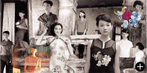

品牌故事
【缘起】
还是在大学读服装设计的那个年头，两位年轻的设计师就计划着将来：拥有一个自己的服装品牌，做些自己喜欢的设计和事情，一定要做得开心，有独特的风格，拥有一批喜欢我们的服装文化氛围的顾客群。缘起，一九九七，深圳，鱼。
【鱼•渔】
鱼，在中国文化里属于一种吉祥物，有着“年年有余”的好意头。它自由自在、悠哉游哉、充满灵性的特点，为衣典公司一线品牌“鱼”的创立带来了灵感源泉。“鱼”品牌创立初期，以民族品牌为基调，确立了休闲风格、无拘无束的设计思路，提出了“以人为本，顺其自然”的设计理念。正式更名为“渔”时，正值2000年。“鱼儿水中游”、“鱼水相融”等寓意，恰如其分地体现了品牌与消费者之间密不可分的关系。
【垂钓渔音】
●心海里的渔
渔，具有浓郁的东方色彩，始终洋溢着以人为本，顺其自然的精神风范。为喜欢和崇尚自然生活的知识女性，找到适合她们特点与向往的时装；让热爱生活的人品味一种现代与古典、东方与西方时光交错的感觉，体会一种深厚的文化氛围。
渔，具有浓郁的东方色彩，始终洋溢着以人为本，顺其自然的精神风范。为喜欢和崇尚自然生活的知识女性，找到适合她们特点与向往的时装；让热爱生活的人品味一种现代与古典、东方与西方时光交错的感觉，体会一种深厚的文化氛围。
●2003~2011年，共同体验东方文化
源于对生活的憧憬，用最真实而不平凡的形式，表达原创的思想。将概念化身为渔衣，承载并传播“共同体验东方文化”的理念。 东方文化透过时尚与经典结合的图案得以诠释，我们关注细节、关注基本要素以及创意的源头，没有刻意去追溯过去或是预测未来，但是古典与时尚的碰撞、传统与现代的冲突、复古与科技的结合让“渔”变得新颖，而且与众不同。
●2012年起，东方时尚新的表达方式
从2012年起，来自东方的内敛与西方的自由碰撞出新的火花，孕育出都市女性独特的现代美学，构建成当代东方时尚的新意境美学表达。这是精神投射服装的一次动人实践，赋予东方情怀的一次美丽尝试。
●渔的路线
虽然我们遵循着低调的宣传原则，却一直坚持着高调的品牌路线。朝向“做世界著名的中国原创品牌”的终极目标之路前进，“渔”
源于对生活的憧憬，用最真实而不平凡的形式，表达原创的思想。将概念化身为渔衣，承载并传播“共同体验东方文化”的理念。 东方文化透过时尚与经典结合的图案得以诠释，我们关注细节、关注基本要素以及创意的源头，没有刻意去追溯过去或是预测未来，但是古典与时尚的碰撞、传统与现代的冲突、复古与科技的结合让“渔”变得新颖，而且与众不同。
●2012年起，东方时尚新的表达方式
从2012年起，来自东方的内敛与西方的自由碰撞出新的火花，孕育出都市女性独特的现代美学，构建成当代东方时尚的新意境美学表达。这是精神投射服装的一次动人实践，赋予东方情怀的一次美丽尝试。
●渔的路线
虽然我们遵循着低调的宣传原则，却一直坚持着高调的品牌路线。朝向“做世界著名的中国原创品牌”的终极目标之路前进，“渔”
的步履坚定而实在。表达。这是精神投射服装的一次动人实践，赋予东方情怀的一次美丽尝试。
【年年有渔】
时光倒流…… 1997年，蓝印花文化开启了“渔”的新纪元17年间，“渔”对美丽的追求从创作的冲动中升华而来民族的，经典的，时尚的，则成为恒久的旋律●1997-1998，蓝印花时代
仅仅是一个开始，我们用最纯正的中国元素，设计一种朴素而自由的人生。
●1998-2001，红黑印象
中国红，永恒黑，经典时尚民族风、简朴风吹过，用心感受每一生活细节。
●2002-2003，出路、发现
寻找出口的路途上，每一个新的发现，都是一次快乐的收获。我们的脚步，坚定地继续前往……
●2004-2006，时尚、美好、色彩
借由五彩缤纷的美好，尚扬“共同体验东方文化”的民族精神，一个大东方概念的延承。设计思路更广，视野更宽，不局限于中国传统文化，而是将时尚与经典进行了融合，在异域文化的冲击下，体现世界多元化文化融会贯通的“世界大同”理念。
●2007-2008，十年追忆、尝试
渔游十年，厚积薄发，终成就一朝华彩，满堂喝彩。而路漫漫其修远兮，“渔”仍将上下而求索，期待未来更多美好的回忆。
●2008-2010，气质
08年之前，是“渔”式风格的开创建立和目标群对焦时期；08年之后，则是品牌沉淀与开拓、寻找新思路的开始。时间行进，环境更迭，人的认知与审美渐渐移位，此时，我
们已然知悉：美丽易逝，气质永存。
●2010-2014，经典、复古
在潮流的更迭流转中，由时间将经典一一定格。而经典的每次回眸，总是让时尚再次风起云涌。从东方的古典文化跨越到西方的复古风潮，“渔”始终走在时尚前沿，用自己独特的设计理念诠释东方时尚新的表达方式，让复古回潮变得时尚且新意十足。